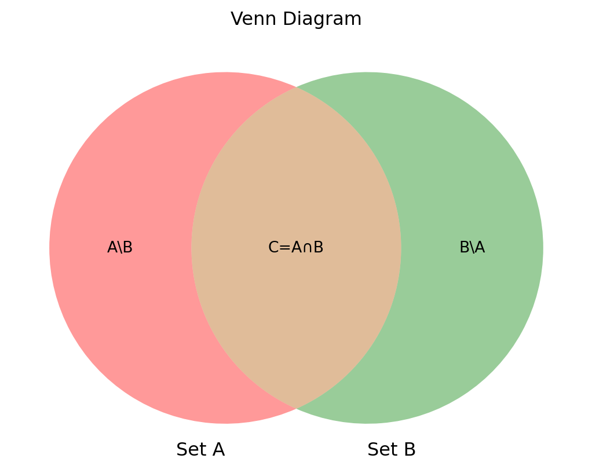

(草野耕一, 2016) の勉強会第1回の補足として，確率論の数学的枠組みを紹介する．

1 今回の内容
1.1 本書の概観
本書は「数理法務」＝「法の数理分析」に関する発展的内容を扱った書籍で，内容は大きく次の4つからなる：
- 法の行動分析：法律家がとるべき行動を数理を用いて分析する．
- 法の統計分析：事実の推定や因果関係の推定に統計手法を応用する．
- 法の財務分析：企業や金融に関わる法事象をファイナンス理論を用いて分析する．
- 法の経済分析：法を経済学的な観点から分析する．
第1回勉強会では第1章「行動分析(1)事実認定」を扱った．事実認定を，Bayes推論の枠組みで捉え直し，法律家として誤謬やバイアスに陥ってしまうことを避けるツールとして，確率論を導入しており，「法の数理分析は役に立つ」ことを端的に実感できる，導入として極めて鮮やかな章になっている．
1.2 主観確率とBayes計算
まず，第1章は，事実認定の文脈で妥当な確率概念は「主観確率」であり，今後「確率」とはこの意味で用いることを注意喚起する内容から始まる．
主観確率と客観確率の詳細な定義は本書を参照願いたいが，一言で言えば，後者は「人間に不可知な真の値」というものの存在を前提とするのに対し，前者はそれを仮定しない．
従って，主観確率の考え方は，より多くのものに「確率」を導入することを可能にし，より柔軟な議論が可能であるが，その分数理的な困難も増し，真に発展が進んだと言えるのは，計算機が十分に爛熟した21世紀になってのことであると言える．この統計学分野を Bayes計算 (Bayesian Computation) といい，筆者の研究分野である．
1.3 Bayes統計学とは？
大雑把に言って，客観確率に基づく統計手法を 頻度論的手法 (frequentist methods)，主観確率に対する統計手法を Bayes手法 (Bayesian methods)という．一般に後者は前者を包含する（前者は後者の特別な場合1）と考えられる．しかしこれは「確率の解釈」が違うのみであり，数学としては確率の定義は1つである．「確率の解釈」については，双方の立場の中でもそれぞれ複数の立場が乱立しており，ここでは立ち入らない．と言っても，この注記も教科書的なもので，実用上不便を生じる場面はほとんどないだろう．
不確実性を定量化するのに、ベイズ計算では必ず『確率』を使います。一般の人から見たら、統計で確率を使うのは当たり前と思うでしょうが、じつは他の統計手法ではそうでもなく、さまざまな解釈が生まれてしまう。定量化にはすべて統一的に確率を使うベイズ計算は、非常にシンプルなので、最終的にすべての統計はベイズに行き着くしかないと思っています。 鎌谷研吾
1.4 Bayes確率の基礎付けの試み……！？
法律家による事実認定の文脈においても，「真実はいつも1つだからそれを推定したい」と考えても，「不確実な中でも，判断を誤らないようにしたい」と考えても，どちらから議論しても良いことは納得いただけるだろう．ただ，一般の人の素朴な「確率」の理解は，Bayes流のものに近いと言われている．2
そのこともあり，本書で「主観確率の考え方を採用する」というのは，「確率の解釈の議論はここではしない」「主観的な確信度合いの意味で，現実から多少の乖離を許す」という程度の意味であろう．
しかし，本書の「主観確率」の議論は中途半端な取り扱いでは終わらず，興味深いことに，One More Step 1-1 (pp.9-10) にて，数理哲学者Donald A. Gilliesによる主観確率の測定による基礎付けの議論が紹介されていた．筆者は初耳の議論であり，己の議論の正統性・基礎付けに細心の注意を施す法律家の心が現れていると筆者は見た．
2 【深掘り】確率の公理
$$
%%% 演算子
%%% 線型代数学%%% 複素解析学 %%% 集合と位相
%%% 形式言語理論 %%% Graph Theory
%%% 多様体 %%% 代数 %%% 代数的位相幾何学 %%% 微分幾何学 %%% 函数解析 %%% 積分論%%% Fourier解析 %%% 数値解析
%%% 確率論%%% 情報理論 %%% 量子論 %%% 最適化 %%% 数理ファイナンス
%%% 偏微分方程式%%% 常微分方程式 %%% 統計力学 %%% 解析力学
%%% 統計的因果推論 %%% 応用統計学 %%% 数理統計%%% 計量経済学
%%% 無限次元統計模型の理論%%% Banach Lattices
%%% 圏 %代数の圏 %Metric space & Contraction maps %確率空間とMarkov核の圏 %Sober space & continuous map %Category of open subsets %Category of sheave %Category of presheave, PSh(C)=[C^op,set]のこと %Convergence spaceの圏 %一様空間と一様連続写像の圏 %フレームとフレームの射 %その反対圏 %滑らかな多様体の圏 %Quiverの圏
%%% SMC %%% 括弧類%%% 予約語
%%% 略記
%%% 矢印類 $$
2.1 「確率の公理」がなぜ重要なのか？
本書1.1節では確率の性質が列挙されている．1.2節以降では，これらの性質が「確率の定義」として引用されるが，いまいちどれを指して「定義」と呼んでいるのか定かでない．
数学的な議論に慣れたあとはそれでも良いかも知れないが，法学も初学の間は逐一根拠条文に戻ることが大切であるように，数学もはっきりと定義を列挙し，「それのみを根拠とすること」を徹底することが大事である．
なお，数学では何を定義として採用するかに任意性がある場合が多いが，唯一やってはいけないことは「定義が曖昧な状態で進むこと」である．そこで，せっかくであるから，現代数学が定義する最も筋の良い定義を採用して，本書の内容を俯瞰することにする．
人は，確率論のもった政治的，社会的意義を忘れてはならない．理知を一切の尺度として「代数学の炉火によって倫理学及び政治学を照さん」(Condorcet) という時代精神，神の啓示に代らんとする確率論，それはフランス革命の思想的基礎に連関することを見失ってはならないのである．(北川敏男, 1949)
現代数学において，確率を特徴付けるものは「代数的性質」であり，それは次の3つのみに集約される．3
2.2 確率の公理
この公理から，我々が日常的な感覚から「確率に成り立っていて欲しい性質」が全て導ける，ということが現代数学の重要な発見である．性質を見ていく前に，「定義」として，主要な概念に親しみやすい名前を付ける．そのすべての過程において，上の[P1], [P2], [P3]以外を用いていないことを確認することは，数学入門の際には非常に大事な営みである．6
この3性質から，本書第1.1節にいう「確率の推論法則」が全て導出できる．
2.3 式(1.1) p.4の証明
2.4 式(1.3) p.5の証明
2.5 式(1.4) p.6の証明
[P2] の条件は，\(A_1,A_2\) が排反である場合に限定しており，その制限が邪魔であった．ここで一般の加法公式を得ることになる．
2.6 条件付き確率の定義
2.7 式(1.7) p.7の証明
3 【重要概念】統計的独立性
3.1 定義
この式は本書p.7 (1.8)式に一致している．これを「積の公式」として導出しているが，これは実は独立性の定義とすべき性質である．その意味するところを次節で解説する．
3.2 条件付き確率による特徴付け
Section 2 で「数学では何を定義として採用するかに任意性がある場合が多い」と言った．今回の「独立性」概念も，2つの同値な定義がある．しかし，「唯一やってはいけないことは定義が曖昧な状態で進むことである」とも言った．従って，どちらか片方を定義とし，「定義ともう一つの条件が同値である」という命題が生まれることになる．
この形の命題のことを（数学概念の）特徴付け という．このことを解説するWikipediaページもある．
本書では2.の性質の方を定義としているが， \(P(B|A)\) という量は， \(P(A)=0\) の場合に定義に任意性が残る．従って，1.の方が定義として明瞭ということになる．
さらに重要なことには，1.の方が一般個数の事象 \(A_1,\cdots,A_n\) の場合に「独立性」の概念の拡張が可能であり，より本質的な定義だと思われる，ということが確率論の示唆である．実は，無限個の事象が独立であることも同様に定義する．
4 【余談】数学について
ここまでを読んだ読者の中で，「集合」「写像」の言葉に，定義が十分に提示されていないと感じたものがあるなら，あなたは極めて筋が良い．実は，これらの裏に全て厳密な定義があるのが数学であるが，今回は確率論に集中するために省いた．
実際，確率論をKolmogorovによる確率の公理的な定義 (Kolmogorov, 1931) から始まる数学分野だとするならば，これはまだ100年の歴史もない，数学分野にしては極めて珍しい若い分野である．
確率論の確率が遅れた理由は，「確率」の概念がつかみどころのない日常に根ざした概念であり，抽象化が本質的に難しいこともあるだろうが，第一に「集合」「写像」といった概念が十分に数学者の間で理解が深まるのを待つ必要があったということがある．
現代の確率論では，「確率は測度の特別なものである」という態度をとっていることは本文中でも述べたが，この「測度」という概念の成立が，そもそもLebesgueによる積分論が確立される20世紀に入るのを待つ必要があった．
References
Kolmogorov, A. (1931). Analytical methods in probability theory. Über Die Analytischen Methoden in Der Wahrscheinlichkeitsrechnung, 104(1), 415–458.
McElreath, R. (2020). Statistical rethinking. Chapman & Hall.
Rubin, D. B. (1984). Bayesianly justifiable and relevant frequency calculations for the applied statistician. The Annals of Statistics, 12(4), 1151–1172.
北川敏男. (1949). 統計学の認識. 白揚社.
草野耕一. (2016). 数理法務のすすめ. 有斐閣. https://www.yuhikaku.co.jp/books/detail/9784641125889
Footnotes
(McElreath, 2020) 1.3節．頻度論はさらに「仮想的な反復」(imaginary resampling of data)を想定する，という性質を除けば，不確実性が観測からくるもののみである特別な場合が頻度論であると捉えられる．↩︎
(McElreath, 2020) 1.3節，(Rubin, 1984)．↩︎
関数とは，入力と出力の集合 \(X,Y\) の間に定まる対応であって，任意の入力 \(x\in X\) に対してただ一つの出力 \(y\in Y\) が対応するもののことをいう．この対応を \(f(x)=y\) と表す．↩︎
後ろの2条件[P2], [P3] のみを満たす関数 \(P\) は「測度」という．そのため，確率は測度でもある．数学用語では「確率分布」は「確率測度」ともいう（例えばこのwikipediaページ）．↩︎
[P1] などの P は Probability のつもりである．↩︎
\(\lnot A\) という記法について，\(\lnot\) は論理記号であるから，集合 \(A\) に用いることは好ましくない．↩︎
確率は必ず\(0\)から\(1\)の値を取る，ということを主張している命題である．初学者はこれが「示すべき内容」として提示されていることに戸惑いを覚えるだろうが，現代数学では「これが示せるような必要最小限の定義が見つかった」ことに価値を見出す．↩︎
ここでは \(P(A)=0\) の場合は \(0\) としたが，実際はどんな値でも良い．↩︎